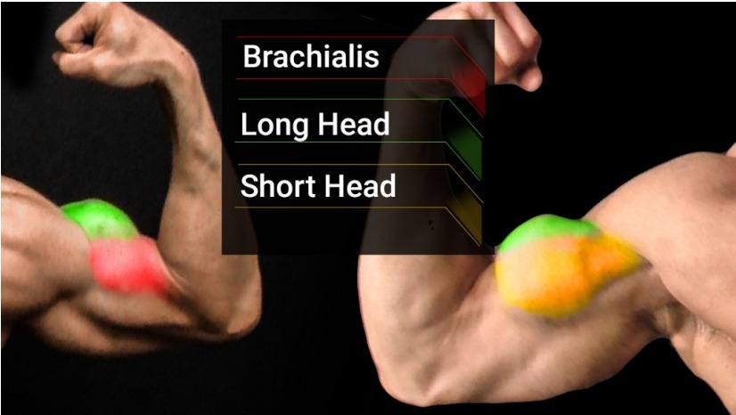

Biceps Exercise
Great! Here are some exercises targeting each part of the biceps, including variations:

1. Biceps Brachii (Overall Biceps)
Exercise: Barbell Curl
Variation 1: Wide-Grip Barbell Curl
- This variation emphasizes the short head of the biceps more.
- Grip the barbell wider than shoulder-width apart.

Variation 2: Narrow-Grip Barbell Curl
- This variation emphasizes the long head of the biceps more.
- Grip the barbell narrower than shoulder-width apart.

Variation 3: Preacher Curl
- This variation isolates the biceps by eliminating body momentum.
- Use an EZ-bar or a straight bar on a preacher bench.

2. Brachialis
Exercise: Hammer Curl
Variation 1: Traditional Hammer Curl
- Hold dumbbells with a neutral grip (palms facing each other).
- Curl the weights up to shoulder level.

Variation 2: Cross-Body Hammer Curl
- Curl the dumbbell towards the opposite shoulder.
- This variation increases the emphasis on the brachialis.

Variation 3: Rope Hammer Curl (Cable)
- Use a rope attachment on a low pulley machine.
- Perform the curl with a neutral grip and keep elbows close to the body.

3. Long Head of the Biceps
Exercise: Incline Dumbbell Curl
Variation 1: Standard Incline Dumbbell Curl
- Sit on an incline bench set at 45-60 degrees.
- Let your arms hang down fully before curling.

Variation 2: Incline Hammer Curl
- Perform the curl with a neutral grip.
- This variation also targets the brachialis along with the long head.

Variation 3: One-Arm Incline Dumbbell Curl
- Perform the exercise one arm at a time.
- This allows for greater focus and isolation on each bicep.

4. Short Head of the Biceps
Exercise: Concentration Curl
Variation 1: Seated Concentration Curl
- Sit on a bench and rest your elbow on the inside of your thigh.
- Curl the dumbbell up while keeping your upper arm stationary.

Variation 2: Standing Concentration Curl
- Bend over slightly, bracing your elbow against your inner thigh.
- Perform the curl while keeping strict form.

Variation 3: Cable Concentration Curl
- Use a low pulley with a handle attachment.
- Perform the curl similarly to the seated concentration curl.

Incorporating these exercises and their variations into your workout routine can help ensure you effectively
target different parts of your biceps for balanced development.